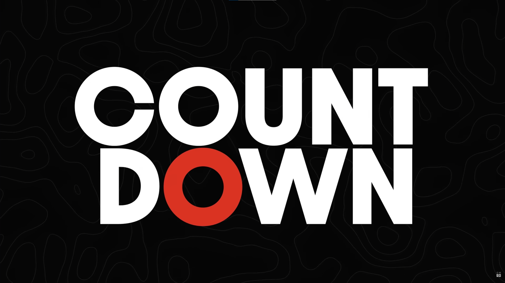
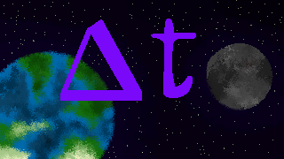

Intro
We so up rn
GMTK 2026 dropped its trailer while I was at work. I took my break so I could watch the reveal and begin plotting. This year's theme was “Countdown”.

Hutner and I hadn’t worked on any games for a bit, but we knew we had to participate in this one. Our favorite game, Forgotten Paths, was made in the last GMTK, so we knew the event would have us produce another banger.
Although, to be honest, it wasn’t our favorite theme, and we almost considered making more of a joke game (if you played Delta-T, we paid homage to the joke game with the pencil ending).
In the end, we knew we should sit down and think of something we’d enjoy. We spent the entire first day coming up with the concept.
The Concept

Time Travel
The idea was inspired by Majora’s Mask, where you have 3 days to save Termina, and you can rewind to the start of those 3 days once you have the Ocarina. You’d learn people’s habits, specific times when events would take place, and you can rewind to change those events.
We thought we could accomplish a much simpler version of that with Delta-T (Delta-T being time for the math nerds, get it?). One minute is counting down, before aliens blow up earth. Talk to people, learn their goals, then save the world from aliens, of course.
So we set off with major goals: 12 characters who will provide different items, objectives, and help towards 1 of the 8 endings.
We wanted cutscenes for each ending, and a huge dialogue tree for each character. We wanted items that you could get in some runs to come back with you and clear other runs. We wanted a rewind button that would quickly show every event play out in front of you again.
It was ambitious, but we’ve done dialogue before; how hard could everything else be?
The Result
Well, if it wasn’t obvious, we didn’t accomplish as much as we wanted.
Midway through development, we had to cut 2 characters and 2 endings for various reasons. Art is usually a bottleneck for us, but Lopeze and our boy Smamson were actually covering most of the art for the game, so it wasn’t as big of a problem this time. The biggest issue this jam was the time constraint.
Dialogue
For starters, we naively fell for the same dialogue trap we faced in Massaquerade, where we thought large intertwined dialogue trees could be written in just a few hours.
It turns out, even after making a game based around dialogue, it’s STILL not easy to make dialogue, and we were only able to get a limited set of options. Hence why some characters feel very flat, like The Baker and The Florist. They were more of a means to an end, only there to give the player a required item we brainstormed on our first day.
At the very least, The Baker and The Florist were kept in the game even when they served little purpose. The same can't be said about Gas Man
Gas Man Cut
Our first cut character was a man whose whole purpose was to give the player the gasoline. We hadn’t thought of a personality for the man, let alone a dialogue tree. So, unfortunately for him, he was terminated and promptly replaced with a machine (like most things in life).
Count D & Ending Cut
The second character revolved around one of our cut endings. It was Count “Dracula”, knocked out in an alleyway (get it, count down). He was going to wake up when you gave him garlic bread, hence why there is garlic bread in the game, even tho it is useless. After he woke up, he’d save you by turning you into a vampire, where you would fly to the alien ship, watch Earth explode, and become an imposter vampire alien.
Here he is
Alien Ending Cut
Speaking of aliens, our second cut ending involved the dead alien, the one guarded by the dog. His cut ending involved you joining the aliens disguised as their deceased friend.
You had to steal Lil Timmy’s shoes and get the flux capacitor (to make hover boots), then take the alien's gun as an ID of sorts. You would then fly up solo to join the aliens. The secret was they actually HATED that alien and flung him down to Earth, but since he “came back,” he’s been pretty chill. Once again, time constraints cut this ending out completely.
Reflection
So what happened?
Clearly we’re not the most proud of this game, and I sat and questioned for a while why this game bothered me so much.
The core of the game was certainly there, but it felt almost like a husk of what we wanted. We had so many creative ideas, so many planned-out events, but they were all rushed out to the very last minute.
My disappointment in the game over time has become more of a humbling experience. As corny as this may be, I wasn’t disappointed in the game; I was disappointed in myself.
Scope: The Balance of Ambition and Ability
Not Scope Creep
I told Hutner I planned on writing this article for a while, and “Scope Creep” was the first term I thought of when looking back at the game. But the more I thought of it, the more I realized there wasn’t any scope creep.
On the first day, we planned out everything. We planned out what each character was going to do, what they looked like, and how the game ended. The scope of the game was always there. The issue was our inability to achieve the scope of our game due to our inexperience as game developers.
What is Scope?
My simplified definition of scope is the blueprint of a game. I’ve divided a game’s scope into three major parts: Creative Fantasy, Game Mechanics, and Completion Time.
Creative Fantasy
Creative Fantasy is what you want from the game, or the fantasy you wish to fulfil. In our case, it was the Majora’s Mask feel. It should also include rough sketches of characters or any story beats. If there is no story or characters, then that should be established when scoping.
Game Mechanics
Game mechanics are what you actually need to code to fulfill the creative fantasy. This is where you should establish how the game is played. Things such as player movement and game systems (like an inventory) should be planned out.
In our case, we planned on the reverse function, character interactions, dialogue tree, and the inventory, to name a few. This should not include HOW you implement these systems. For example, we knew we needed a system that tracked the player’s items, but we never discussed how that should be implemented. (In our case, since we knew we had a limited selection of items, we just set flags if the player “picked up” the item.)
Time Management
Time Management is the final piece of game scope. It should approximate times for when the game mechanics will be finished. Setting these times should account for experience in coding similar systems or if new systems are being created. Having set times will let you as a team (or just yourself) know whether you are on schedule or falling behind.
Our Pitfall
Frankly, Time Management is where we fail when scoping a game. We never truly set time expectations for any of these game mechanics. Part of that, I believe, is our overestimation of our ability as developers. We are still fairly new at creating games, and we are learning (and forgetting) things quite often.
As an example, in my case, I had done a cutscene in Forgotten Paths before, so I had taken it upon myself to do all the cutscenes in the game. Well, when it finally came time to create these cutscenes, I had completely forgotten how to do it.
I spent the next few hours fiddling with the AnimationPlayer until I had enough control to get an outcome that I thought was good enough.It was 3 minutes before the deadline when I was pushing the final cutscene.
Proper Scope
Proper scope is the fine balance of one's creative ambition versus their ability to produce those creations.
Scope is the Balance of Ambition and Ability ~ Kob
I coined it.
If you create something too simple or uncreative, you will feel unfulfilled. If you create something too grand, you’ll feel overwhelmed or disappointed. The goal is to find the middle ground.
While it’s easier to say “create X system for XYZ”, the skill of breaking it down realistically and setting these expectations should help create the proper scope for a game, which in turn will create that satisfaction of a game you expected.
I believe our lack of a proper scope for Delta-T was what led to our initial disappointment in this game. We planned too many mechanics and sewed them up as quickly as we could, and they didn’t come out as expected.
However, on reflection, I learned that these were pitfalls that could have been avoided had we realistically looked at our abilities as game developers.
Lessons
Initial Goals
As I stated earlier, I was initially disappointed in the game, which grew into being disappointed in myself.
One of our goals going into the jam was to each refine a game development aspect. Hutner was creating a new system for our dialogue as well as a flag system. I was learning how to create the rewind, UI, and cutscenes.
My Ultimate Disappointment
I had believed I was better at game development and that I could accomplish all of these goals within a reasonable time, but I failed that. It was this shattering of my expectations as a game developer that made me disappointed.
However, while I was disappointed, this was a humbling experience that woke me up. It showed me that I’m not impervious to these pitfalls.
This game challenged me to develop skills in UI and the AnimationPlayer, which I will continue to use in future games to grow as a developer.
Closing Thoughts
What was it all for?
To be honest, I’m not THAT disappointed in myself; it’s an equal mix of the game and myself.
My main goal was to write down my thoughts on the proper way to scope a game.
As a spoiler, by the time I’m writing this, we already participated in another game jam where we created What a STEEL!, where I focused on the combat, and I believe I did a very good job of scoping out and creating an actual combat system.
There were some unexpected events in that project that did occur, but Hutner talks about it more if you’re interested in reading that.
My thoughts on Delta-T
Delta-T is my least favorite game I’ve developed, but I learned from it and I will continue to improve my work from here on out.
That’s all I have to say. Thanks.